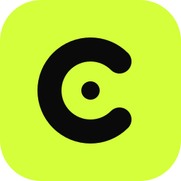

Cinta
Brand board de la app y de la épica Mi año en cine. Es nocturna, directa y cómplice. Las
decisiones de esta página se escriben para el agente en DESIGN.md y viven en código en
src/tema/.
Marca
Logo, wordmark y atribución
El logo es una "C" abierta con un punto: un carrete y a la vez un ojo. El logo de TMDB mide 92 × 12 px, siempre más pequeño que la marca (36 px de logo + wordmark de 22 px).
Color
Paleta (tema normal)
fondo · #0A0A0A
superficie · #131313
superficieAlta · #1B1B1B
borde · #262626
texto · #F4F4F1
textoSecundario · #A3A3A0
textoTenue · #8A8A86
acento · #D4FF3A
barra · #666662
peligro · #FF7A6B
Estados de una obra y error
Contraste (mínimo 4,5:1)
| Texto | Fondo | Normal | Alto contraste |
|---|---|---|---|
| texto | fondo | 18,0:1 | 19,1:1 |
| texto | superficie | 16,9:1 | 17,6:1 |
| textoSecundario | superficie | 7,3:1 | 15,5:1 |
| textoTenue | superficie | 5,4:1 | 12,4:1 |
| sobreAcento | acento | 17,1:1 | 17,1:1 |
| acento | fondo | 17,1:1 | 18,2:1 |
| viendo | acentoSuave | 12,0:1 | 9,2:1 |
| por ver | superficieAlta | 6,8:1 | 13,2:1 |
| peligro | superficie | 7,3:1 | 9,6:1 |
El tema de alto contraste (Perfil → Accesibilidad) aclara los textos secundarios y los bordes. Los valores
están en
DESIGN.md.
Tipografía
Fuente del sistema (SF Pro / Roboto)
Todos los tamaños se multiplican por la escala de texto elegida en Accesibilidad (1 · 1,15 · 1,3).
Espacio y forma
Escala de espacios, radios y toque mínimo
Componentes
Los del Proyecto 3 que se conservan
Nuevos de la épica
Pantalla de ejemplo
Mi año en cine · 390 px, solo con componentes del board
Voz
Tú, directo y cómplice; nunca regaña
Año vacíoNo viste nada en 2023. Marca obras como vistas y aquí aparecerá tu año.
Sin conexiónSin conexión. Ves la última copia guardada de tu lista.
ErrorNo pudimos completar los datos de TMDB. Tu resumen cuenta todas las obras, pero 1 quedó sin datos.
Sin calificadasCalifica lo que viste este año y aquí aparecerá tu mejor obra.
Datos faltantes2 películas no tienen duración y no suman horas.
ProgresoCompletando datos de TMDB… 2 de 5
Sí: frases cortas, el problema y qué hacer. No: códigos técnicos, "Error 403", signos de exclamación ni culpar al usuario.